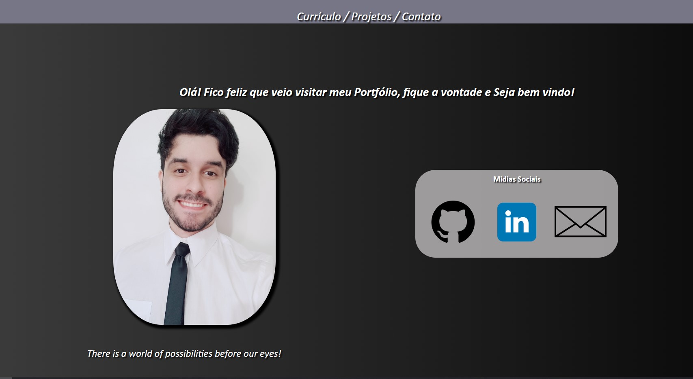
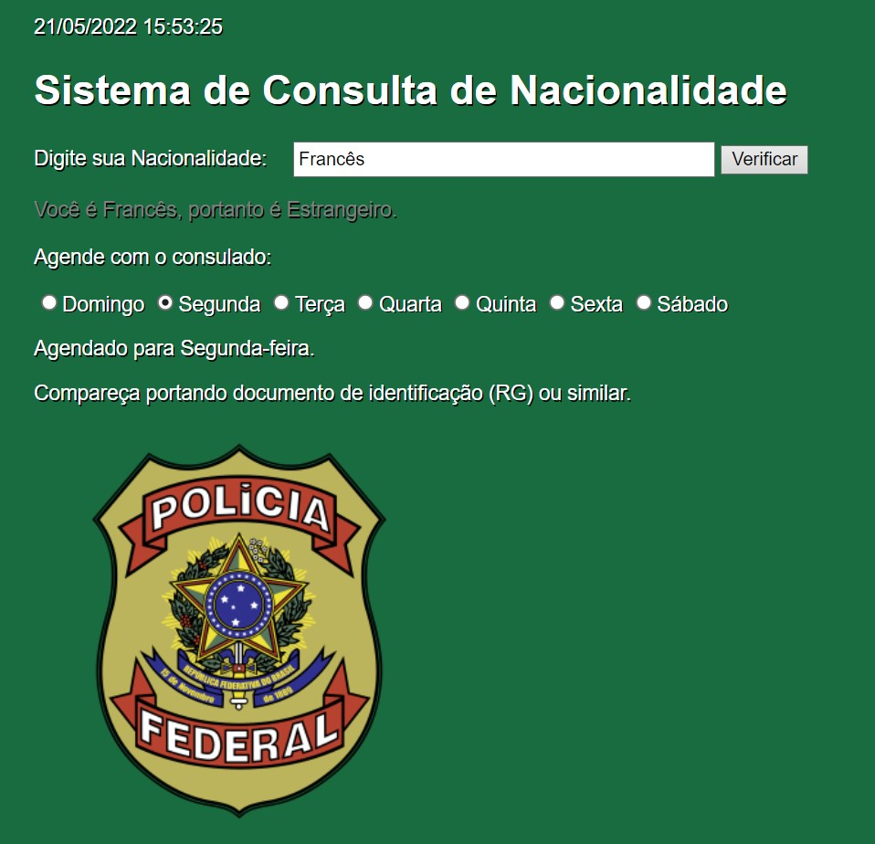

Portfolio 2022 - Portfolio que estou desenvolvendo para futuras apresentações aos meus recrutadores. Linguagens Utilizadas: HTML, CSS e Javascript 
Linguagens Utilizadas: HTML, CSS e Javascript
Portfolio 2020 - Portfolio que desenvolvi por meio do site WiX.
Link: https://cxalexandre.wixsite.com/curriculum
Site do Consulado - Site que estou desenvolvendo de cadastro para agendamento no consulado Brasileiro. 